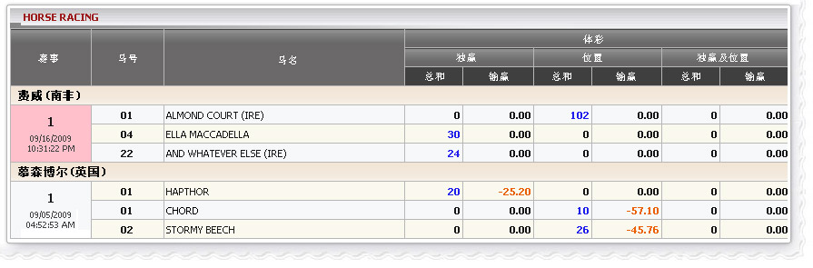

赛马
定义:
查看代理人的赢/输根据门占成票已投注种类独赢，位置或独赢/位置。此报告显示所有正在进行和当日收票而已。要查看投注历史上点击金额总数栏

赛果总投注
费威(南非), 会员投注以下马匹:
- ALMOND COURT: 金额 = 1020, 投注种类: 位置, 代理占成 = 10%
--> 代理收入根据占成 =金额*占成= 1020*10% = 102
- ELLA MACADELLA: 金额=300, 投注种类: 独赢, 代理占成 = 10%
--> 代理收入根据占成 =金额*占成= 300*10% = 30
- AND WHATEVER ELSE: 金额=240, 投注种类: 独赢, 代理占成 = 10%
--> 代理收入根据占成 =金额*占成= 240*10% = 24
注意: 这些注单仍然在进行，因此，所有赢/输数字= 0
慕森博尔(英国)， 会员投注以下马匹:
- HAPTHOR: 金额 = 200, 赔率=2.26, 投注种类: 独赢, 代理占成 = 10%, 投注状态: 赢
--> 代理收入根据占成=金额*占成=200*10%=20
--> 代理赢/输根据占成= -(金额*占成*(赔率-1))=-25.2
- CHORD: 金额 = 100, 赔率=6.71, 投注种类: 位置, 代理占成= 10%,投注状态: 赢
--> 代理收入根据占成 =金额*占成= 100*10% = 10
--> 代理赢/输根据占成= -(金额*占成*(赔率-1))= -57.10
- STORMY BEECH: 金额 = 260, 赔率=2.76, 投注种类: 位置, 代理占成 = 10%, 投注状态: 赢
--> 代理收入根据占成=金额*占成=260*10%=26
--> 代理赢/输根据占成= -(金额*占成*(赔率-1))= -45.76